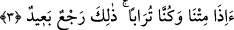
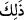
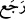
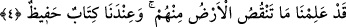
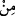

kafirler anlaşılır. Zaten böyle bir şey başkasından sâdır olmaz. Bu sebeple özellikle
“kâfirler” diyerek belirtmeye gerek yoktur. Cümlenin ikinci kısmında “kâfirler” diye
açıkça belirtilmesinin sebebi ise söylediklerinden dolayı kâfir olduklarının
tescillenmesi içindir.
3. «Biz öldüğümüz ve toprak olduğumuz zaman mı (dirileceğiz)? Bu, akla uzak
bir dönüştür.»
Kâfirler şöyle der: “Biz ölüp de ruhlarımız bedenlerimizden ayrıldığında ve toprak
olduğumuzda -ki o zaman bizle şu anki yeryüzü toprağı arasında hiçbir fark olmayacak-
bu uyarıcının ve Kur’ân’ın söylediği gibi (şimdiki hâlimize) döndürülecek ve yeniden
diriltileceğiz öyle mi? Hâlbuki o zaman hayat ile bağımız tamamen kopmuş olacak.”
Buradaki hemze inkâr içindir. Yani “döndürülmeyeceğiz!” ve “diriltilmeyeceğiz!”
anlamına gelir.
“Bu, akla uzak bir dönüştür!” Âyetteki __WORD__ ifadesi, tartışma konusu olan diriltilme
husûsuna işârettir. __WORD__ fiili geri döndürmek anlamında müteaddî bir fiildir. Şöyle demiş
olurlar: “Hayata ve eski halimize döndürülmemiz, düşünceye, âdete ve imkâna aykırıdır
ya da doğru değildir, olmayacak bir şeydir. Çünkü bizim toprağımızı diğer topraklar
içinden seçip ayırmak mümkün değildir.”
4. Biz, toprağın onlardan neleri eksilttiğini kesinlikle bilmekteyiz. Yanımızda o
bilgileri koruyan bir kitap vardır.
“Şüphesiz biz toprağın, onlardan neleri eksilttiğini bilmekteyiz.” İfadesi, onların
yeniden dirilmeyi uzak görmelerini reddetmek ve ortadan kaldırmak içindir. Yani: “Biz
bunu yapabilecek güçteyiz” demektir. İlmi, toprağın ölülerin cesedlerinden neleri alıp
götürdüğünü, onların etlerinden ve kemiklerinden neleri yiyip bitirdiğini bilecek kadar
geniş olan kimsenin onlara eskiden olduğu gibi hayat vermesi nasıl uzak görülebilir?
Âyet-i kerimede kendinden sonra gelenin bir kısmının kasd olunduğunu ifade eden
harf-i ceri kullanılmıştır. Çünkü yeryüzü acbü’z-zenebi yok etmez. O, âdemoğlunun
vücudunun tohumu gibidir.
Hadis-i şerifte şöyle buyrulur: “Âdemoğlunun acbü’z-zeneb hariç bütün bedeni yok
olur. İnsan ondan yaratılmış ve yine ondan bir araya getirilip tekrar
diriltilecektir.”[232] Acb, kuyruk sokumunun kökü ve bir şeyin son kısmı demektir.